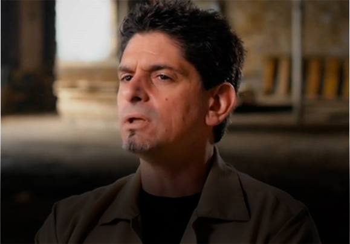

MISSÕES
"Fui libertado quando descobri minha identidade em Cristo", diz ex-viciado em crack

COLUNISTA

Joel Engel
Lider do Ministério Engel em Santa Maria - Rio Grande do Sul
LGBT
Jim Carrey prega sobre Jesus para ex-presidiários em centro de reabilitação